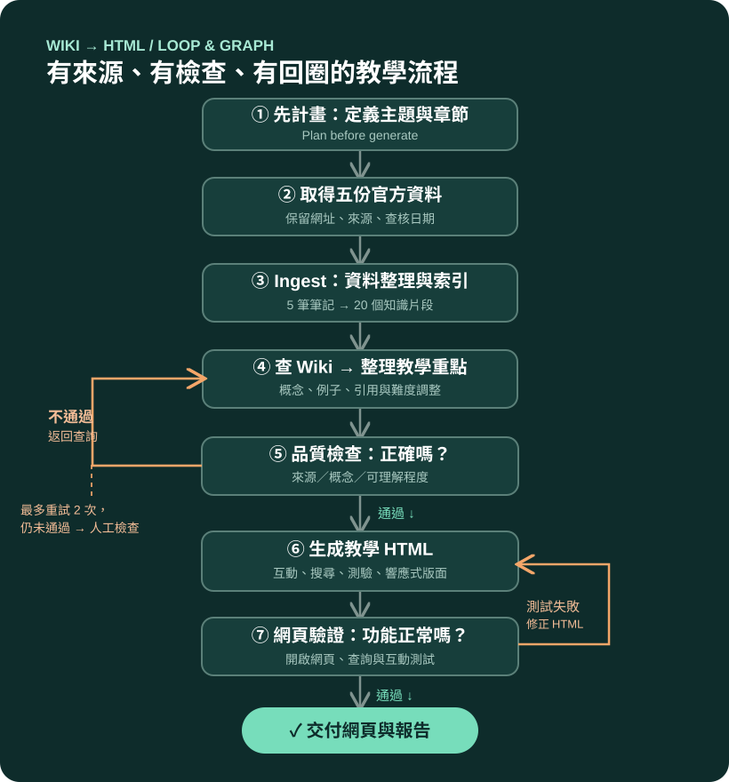

💬
你問，它回答。
擅長解釋、摘要和單次對話；未必會自己決定下一步該使用哪個工具。
「什麼是 CPU？」→ 回答概念
聊天機器人可以回答問題，但 AI Agent 如何規劃、使用工具、檢查結果？用五份官方資料整理成的 Wiki，帶你一步步弄懂。
從最常搞混的概念開始，再看組件與流程。每個概念都有對應的 Wiki 來源。
擅長解釋、摘要和單次對話；未必會自己決定下一步該使用哪個工具。
可能先讀資料、選擇工具、執行任務，再檢查是否符合目標；必要時修正路線。
點開卡片看生活化例子
它依照預設規則計算晚餐推薦，屬於規則式推薦 Workflow；不是因為介面可愛、會提供推薦，就自動變成 AI Agent。
選擇案例，按「下一步」模擬工作流程。這是預先設計的教學模擬，不會真的呼叫 LLM 或外部工具。
使用者希望把課堂的 AI Agent 資料整理成教學內容。
以下搜尋真正使用本專案 ingest 後的 Wiki 索引。輸入關鍵字，直接查看命中的來源與章節。
這次網站的內容設計使用明確的檢查節點。資料不夠就回去補、說法有誤就重寫，通過後才組成 HTML。

固定五份來源，保留名稱、連結與日期；每份筆記分成摘要、重點、例子與誤解。
先找相關的 Wiki 片段；沒有來源的說法不直接寫進教學網頁。
遇到概念混淆、缺來源或介面異常，回到對應步驟；最多重試兩次，仍失敗就人工檢查。
答題後會顯示分數、正確觀念與對應 Wiki。答錯也能重新練習。
想知道每份資料如何匯入、整理及核對？完整的 Wiki 和流程都在這裡。